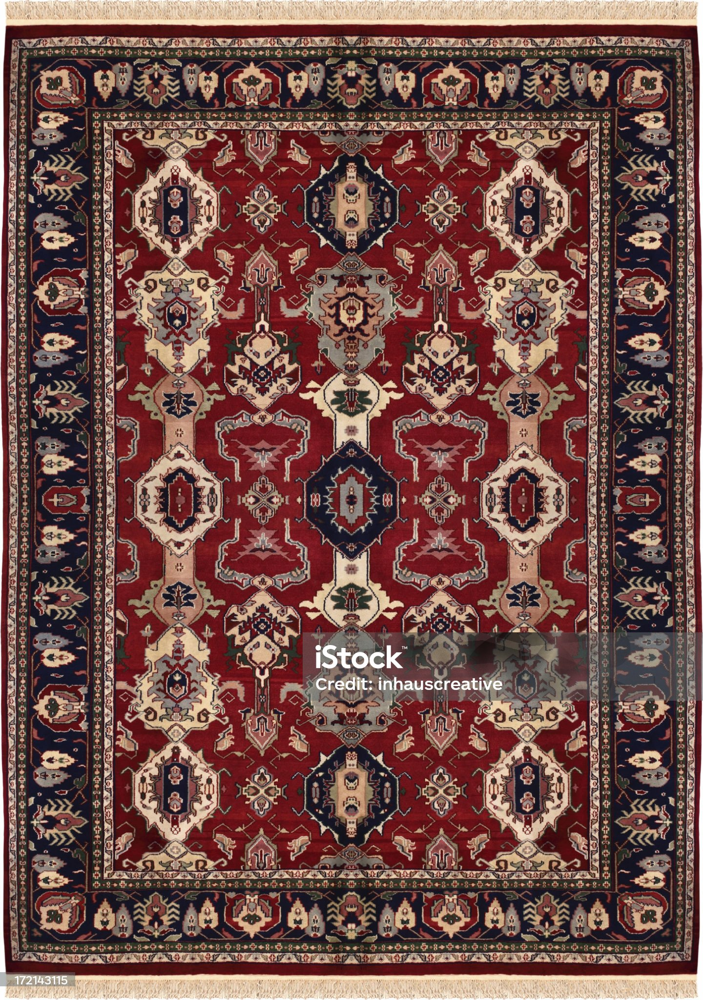

Punainen paholainen

Punainen Paholainen -matto on rohkea valinta, joka tuo huomion kodin sisustukseen.
Sen rikas punainen väri ja ainutlaatuinen kuvio tekevät siitä keskipisteen huoneessa.
Pituus: 200 cm
Hinta: 149 €
Väri: Punainen
Materiaalit: Villasekoite